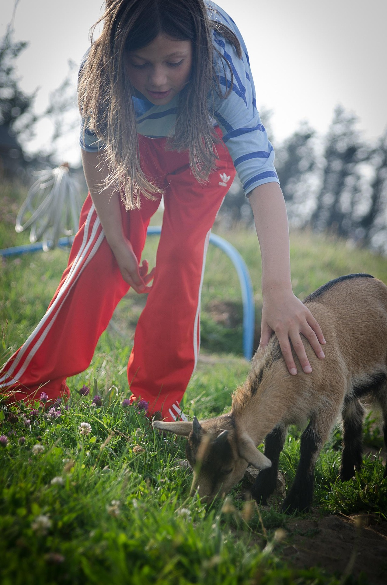

Notre mission
Retour aux fondamentaux
Nos valeurs : partage, respect de l’environnement, apprentissage pratique et engagement communautaire.
Ferme pédagogique, ateliers nature et activités éducatives pour tous.
Visitez la ferme
Retour aux fondamentaux
Nos valeurs : partage, respect de l’environnement, apprentissage pratique et engagement communautaire.

Cultures locales description

Conservatoire d'animaux de petite taille.

Aimer les animaux c'est les connaître, nous proposons organsisons...


Samedi 20 mars 2026
Découverte des techniques de permaculture pour enfants et adultes.
Dimanche 4 avril 2026
Visite de la ferme et rencontre des animaux.
Samedi 10 mai 2026
Vente de légumes et produits locaux.
Bénévolat, visites et ateliers pour tous.
Nous contacter